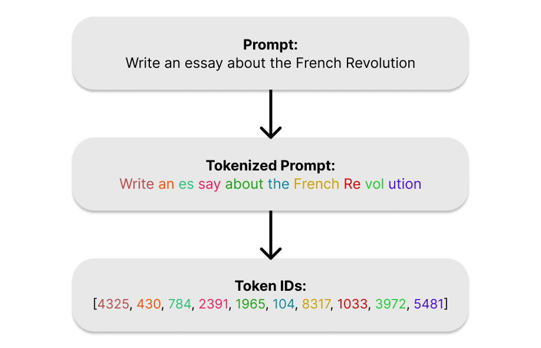
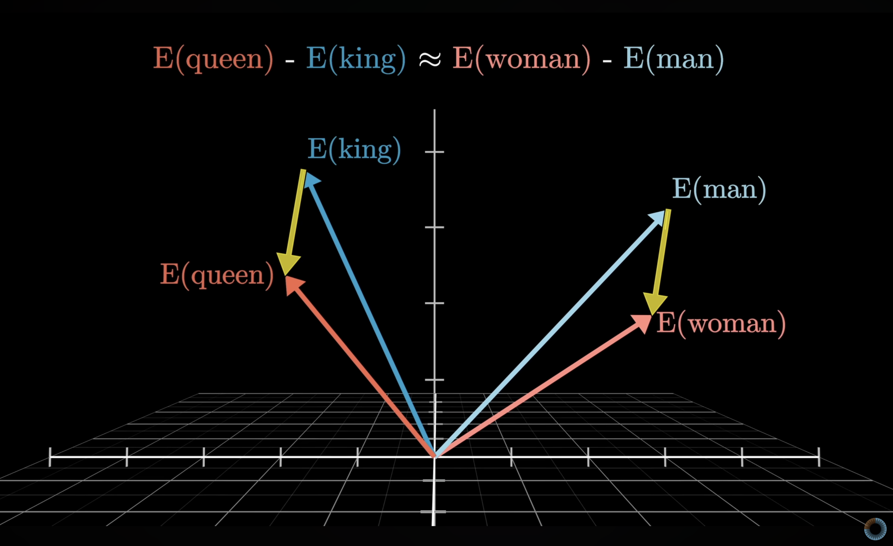
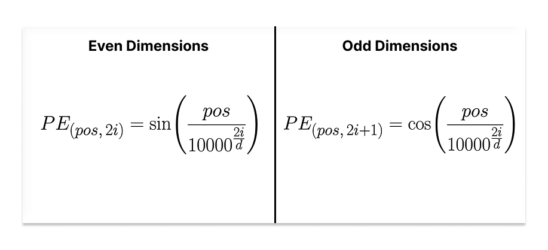
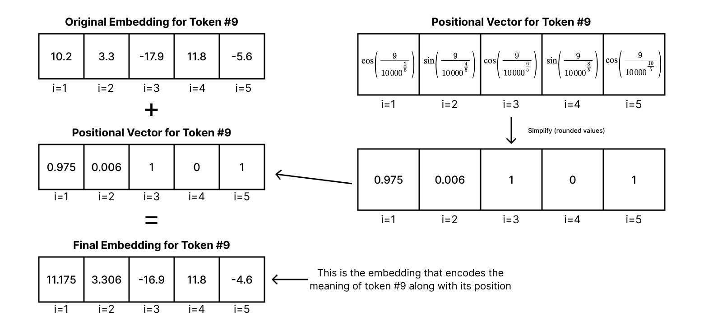
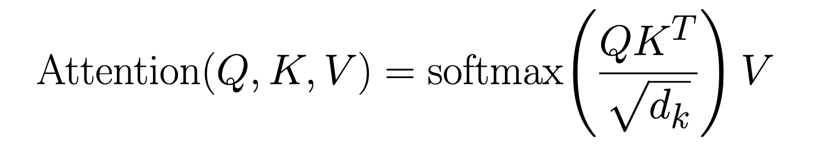
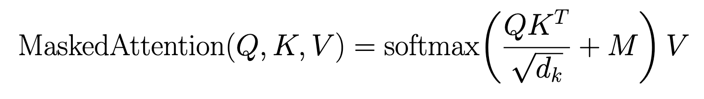
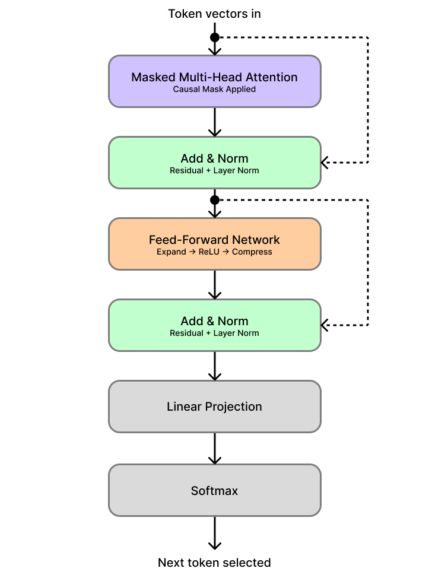
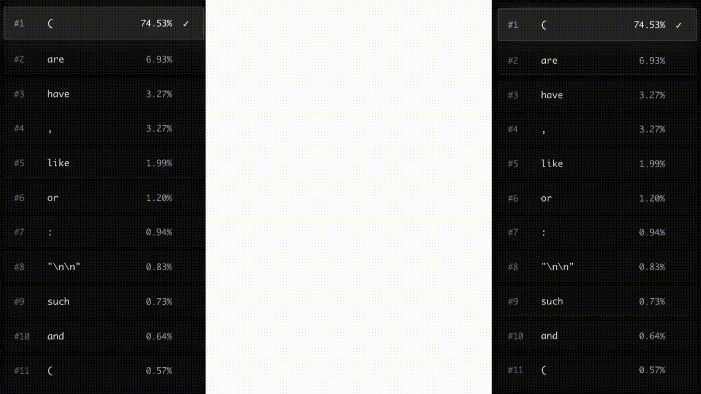

Introduction
You've probably asked an AI to write an email or explain a concept and watched it generate a phenomenally accurate response. But have you ever stopped to wonder: how does it actually do that?
Under the hood of nearly every modern AI language model like ChatGPT, Claude, Gemini, and Grok, is a single architectural idea called the transformer. Introduced in an infamous 2017 paper titled "Attention Is All You Need", the transformer quietly became the foundation of one of the most significant technological shifts in recent history.
What seems like magic on the surface is in reality an extremely elegant system built from a handful of clever mathematical ideas stacked on top of each other. In this post, I'll walk through each of those ideas and try to explain them in an intuitive and understandable way. By the end, the next time you hit send on an AI prompt, you'll have a real sense of what happens next.
Background
Before going over the architecture itself, I'll quickly go over its background: why it was created and how it turned into the standard architecture for LLMs.
Believe it or not, the transformer was originally built to solve a very specific problem: translation.
Before transformers, AI translation models processed language the way you might read a sentence out loud: one word at a time, in order. These models (called RNNs) would read a sentence and then start to forget the first few words of the sentence when approaching the last word. Translating long, complex sentences was a constant uphill battle against fading memory.
This is where the transformer comes in with a completely different approach. Rather than reading sequentially, it looks at all the words in a sentence at the same time, and relies heavily on a special mechanism called attention. This architecture turned out to be extraordinarily powerful, and not just for translation. Researchers quickly realized that the same mechanism for turning an input sequence into an output sequence could be applied to almost any language task like summarization, question answering, chatting, and more.
In short, a transformer is an input to output machine. You give it a sequence (prompt) and it produces a new sequence (output) in response. Everything I'll cover in this post revolves around this one idea: transforming your input prompt into a generated output.
Tokenization
Let's start our journey into the transformer with your prompt. Before a transformer can do anything with your prompt, it needs to solve a very fundamental problem: computers don't understand words, they understand numbers. Tokenization is the process of converting raw text into a form the model can actually work with.
During tokenization, your text gets broken into small chunks called tokens. A token isn't exactly a word, it's rather a piece of a word. The sentence "The transformer is fascinating" might get split into tokens like: ["The", " transform", "er", " is", " fascin", "ating"]. Short, common words like "the" or "is" usually get their own token. Longer or rarer words get broken into pieces.
Every token is assigned a unique integer ID from a fixed vocabulary (a table built during training that maps tokens to IDs). "The" might be token 31, "transform" might be 8529, and so on. Your entire prompt becomes a simple list of numbers: [31, 8529, 480, ...].

The vocabulary is built using an algorithm called Byte Pair Encoding (BPE). It starts with individual characters, then repeatedly merges the most frequently appearing pairs until it reaches a target vocabulary size (usually 50,000 - 100,000 tokens). The result is a vocabulary that is compact but expressive. Common words get single tokens, while rare words get decomposed into familiar parts.
So why does this work? Tokenization works because language is deeply repetitive at the sub-word level. The fragments "ing," "tion," "un-," "re-" appear across thousands of words. By breaking text into these natural pieces, the model can handle words it's technically never seen before by recognizing their parts, much like how you can make a reasonable guess at the meaning of a word even if you've never encountered it. Also, BPE keeps the size of an LLM's vocabulary manageable while preserving enough detail to handle creative spelling, code, foreign words, and everything in between.
Once your prompt is a list of token IDs, it's ready for the next step: giving those numbers meaning.
Embeddings
We now have our prompt as a list of token IDs. The problem is, these numbers are essentially labels. The model needs a way to turn these arbitrary IDs into something that actually captures meaning. That's what embeddings do.
An embedding transforms each token ID into a vector : a list of thousands of numbers. Just like how vectors of a 3D graph contain 3 numbers that point to a certain point in a 3D space, the vector embeddings that your token IDs turn into point to a certain point in a high-dimensional space with thousands of dimensions. These vectors encode something about what that token means. Think of it like giving each word a location in a vast, high-dimensional space. Words with similar meanings end up near each other in that space. "King" and "Queen" are close. "Cat" and "feline" are close. "Cat" and "rocket" are far apart.
This spatial relationship is what lets the model reason about language. Instead of working with meaningless IDs, it's now working with numerical representations that carry actual meaning. Here is a famous example of this spatial relationship: if you take the difference vector between the vectors for "woman" and "man", it is remarkably similar to the difference vector between the vectors for "queen" and "king".

Credit: 3blue1brown
This indicates that during training, the embeddings are chosen so that one direction in this high-dimensional space encodes gender information. With all of the possible directions in such a high-dimensional space, it's no wonder that LLMs are able to encode so much information as relationships between vectors.
The math behind the embedding layer is simple. At its core, an embedding layer is a large lookup table: a matrix of shape [vocabulary size x embedding dimension]. For each token ID, the model simply retrieves the corresponding row from this matrix. If the vocabulary has 50,000 tokens and the embedding dimension is 512, that's a matrix of 50,000 rows and 512 columns, where each row is the vector representation of one token.
So why do embeddings even work? Embeddings work because meaning in language is largely defined by context. Words that appear in similar sentences tend to mean related things, so by training on vast amounts of text, the model implicitly learns these relationships and bakes them into the geometry of the embedding space.
The high dimensionality of these vectors is also crucial. With a high number of dimensions, the space is rich enough to encode many different types of similarity simultaneously (such as grammatical role, topic, sentiment, formality, etc) without any of them interfering with each other.
At the end of this step, every token in your prompt has been transformed from a flat ID into a meaningful vector. The model now has something it can genuinely reason with, but there's one thing still missing. Remember when I mentioned that transformers read all of your prompt at the same time rather than sequentially? Because of this, it has no idea what order those tokens came in. That's the next problem to solve.
Positional Encoding
At this point, every token in your prompt is a rich, meaningful vector. But if you handed those vectors to the transformer with no other information, it would have no idea whether the prompt says "dog bites man" or "man bites dog", since they both have the same tokens. Processing tokens in parallel removes any order-related information that the prompt contains. Positional encoding is how we put it back in.
Positional encoding adds a small signal to each token's embedding that encodes its position in the sequence. The first token gets a nudge in one direction, the second token gets a slightly different nudge, the third another, and so on. The embedding itself stays intact, we're just augmenting it with a layer of positional information.
After this step, two identical words in different positions will have slightly different vector representations, which gives the model everything it needs to distinguish "dog bites man" from "man bites dog".
Let's take a look at the math behind positional encoding. Essentially, a positional vector is added to the original embedding vector to encode the position of the token into the embedding. Each value of the positional vector is calculated element by element using the position of the token and the current dimension index using this formula:

where pos is the token's position in the sequence/prompt, i is the dimension index, and d is the embedding size of the model. The even dimensions formula is used when i is even, and the odd dimensions formula is used when i is odd. The result is a positional vector with a wave-like pattern for each embedding. This positional vector is then added directly to the original token's embedding. Here is a simple example:

The positional vector is simplified in this example - rounded to 3 decimal places
Modern models often replace this fixed formula with learned positional embeddings rotary positional embeddings. This article focuses on the original transformer architecture so I won't be covering any other methods. While sinusoidal positional encoding isn't as optimal for scale, it is still works efficiently. But why does this work?
The sine and cosine functions were chosen deliberately. Because they're periodic and smooth, nearby positions produce similar encodings, while distant positions produce noticeably different ones. This gives the model a natural sense of proximity. It can tell not just that two tokens are in different positions, but roughly how far apart they are. There is also another elegant property: the relationship between any two positions is consistent regardless of where they appear in the sequence. Position 1 and position 2 are just as close as position 101 and position 102. This consistency helps the model generalize to sequences of different lengths.
With positional encoding applied, each token's vector now carries two things at once: what it means, and where it sits. That's everything the transformer needs to start doing the real work.
Attention Mechanism
Each token in your prompt now carries a rich vector encoding both its meaning and its position. The next question is: what does the transformer actually do with those vectors? The answer is attention, and it's the most important idea in this entire architecture.
Think about how you read this sentence: "The animal didn't cross the street because it was too tired". When you reach the word "it", your brain immediately reaches back through the sentence and connects it to "animal", not "street". You did that effortlessly because you understand context and know which words are relevant to each other. Attention is the mechanism that gives the transformer the exact same ability, the ability to know which words are relevant to each other.
For every token in your prompt, attention asks a simple question: which other tokens in this sequence are most relevant to understanding me? It then lets each token look at every other token, score how relevant each one is to itself, and blend their information together accordingly. A token surrounded by context that matters to it pulls in a lot of that context. A token that's relatively self-contained doesn't. The result is that each token's vector gets updated to reflect not just what it means on its own, but what it means given everything around it.
Now let's look at how this actually works mathematically. The mechanism is called scaled dot product attention, and it's built around three vectors derived from each token's embedding: a Query (Q), a Key (K), and a Value (V).
The intuition behind these three roles is pretty analogous how a search engine works. The Query is what a token is looking for. The Key is what a token advertises about itself. The Value is what a token actually contributes if it's deemed relevant. Every token simultaneously acts as a searcher (Query), a candidate (Key), and a source of information (Value).
These three vectors are produced by multiplying each token's embedding by three weight matrices: WQ, WK, and WV, which the model develops during the training process. Once we have the Q, K, and V for every token, the attention formula takes over:

Let's break this down step by step. First, we compute QKT: the dot product between every token's Query and every other token's Key. A dot product is essentially a measure of alignment. two vectors that point in similar directions produce a large dot product, while unrelated vectors produce a small one. This gives us a matrix of raw relevance scores, one score for every possible pair of tokens in the sequence.
Next, we divide by √dk, where dk is the dimensionality (number of elements) of the Key vectors. This scaling step keeps the dot products from growing too large. In high-dimensional spaces, dot products naturally tend toward large magnitudes, and if left unscaled they can push the next step (the softmax) into a region where its gradients become vanishingly small, making training unstable. Dividing by √dk keeps the values in a reasonable range.
Then comes softmax. Softmax converts each token's set of raw relevance scores into a proper probability distribution: a set of non-negative probabilities or weights that sum to 1. High scoring pairs get weights close to 1, low scoring pairs get weights close to 0. These are the attention weights: a precise, learned answer to the question of how much each token should attend to every other.
Finally, we multiply these attention weights by V, the Value matrix. This is the payoff step. Each token's output becomes a weighted blend of all the Value vectors in the sequence, mixed in proportion to the attention weights. Tokens that were deemed highly relevant contribute a lot to the output; irrelevant tokens contribute almost nothing.
There's one more important detail: the transformer doesn't run this process once. It runs it several times in parallel, each with its own independently learned WQ, WK, and WV matrices. This is called Multi-Head Attention. Each "head" gets to look at the sequence through a different lens, learning to track a different type of relationship simultaneously. One head might focus on grammatical agreement, another on coreference (like "it" -> "animal"), another on semantic similarity. The outputs of all heads are then concatenated and projected back into the original embedding dimension, producing a single vector per token that is rich with contextual information.
So why does this actually work? The dot product between a Query and a Key is at the heart of it. When two tokens are related, their Query and Key vectors (both learned from training data) tend to align in the same direction in the vector space. The dot product captures that alignment and converts it into a high relevance score. When two tokens have nothing to do with each other, their vectors point in different directions and the score stays low. The model doesn't need to be told which tokens are related; it learns to produce Query and Key vectors that make the scoring naturally fall out correctly.
The softmax then acts as a soft, differentiable selector. Rather than making a hard binary choice ("attend to this token, ignore that one"), it produces smooth weights across the entire sequence. This matters for training: soft selections allow gradients to flow back through the network and update the weight matrices via backpropagation, which is how the model learns what to attend to in the first place.
The separation of V from K is also deliberate. The Key vector only needs to be useful for matching (signaling "I am relevant to you"). The Value vector is free to encode richer, more expressive information that actually gets passed along. Separating these two roles gives the model more flexibility in what it advertises versus what it actually contributes.
After attention, each token's vector has been transformed. It no longer just represents that token in isolation, it now carries a context-aware summary of the entire prompt, weighted by relevance. The model has, in a single layer, done what took sequential models many steps to approximate: read everything and decided what matters to what.
The Encoder
The original transformer described in "Attention Is All You Need" was built with two halves: an encoder and a decoder. The encoder's job was to read the input sequence and produce a rich, context-aware representation of it, which the decoder would then use to generate an output. If you ever read the original paper, you'll encounter this architecture. However, modern LLMs like GPT, Claude, and Llama have moved away from this design entirely, so I won't be covering it in detail.
Researchers found that for generative language tasks, a decoder-only architecture (one that simply predicts the next token given all previous ones) was simpler, scaled better, and performed just as well. The encoder was dropped, and the decoder became the whole model. That's what we'll focus on next.
The Decoder
Everything up to this point: tokenization, embeddings, positional encoding, and attention; has been preparation. The decoder is where generation actually happens. It's the engine that produces the response you see on your screen.
The most important thing to understand about how the decoder works is that it doesn't write the entire response at once. It generates one token at a time, in a loop. It looks at your prompt and everything it has already written, predicts what single token should come next, adds that token to the sequence, and then repeats the whole process now with one more token added to the sequence. This continues until the response is complete.
Think of it like a novelist writing a story one word at a time, re-reading everything from the beginning before writing each new word. Every word they write is informed by the entire sequence of words that came before it. The decoder does exactly this in fractions of a second.
There's one crucial rule baked into this process: the model is only ever allowed to look backwards. When predicting the fifth token, it can see tokens one through four, but not six, seven, or anything beyond because those don't exist yet. The model has to make its prediction using only the context it would actually have available at that moment.
Now let's look at the math that makes this happen. The decoder is a stack of identical layers, modern models can have dozens or even hundreds of them. Each layer has the same two-step structure.
The first step is Masked Multi-Head Self-Attention. This is the same attention mechanism we covered earlier (Queries, Keys, Values, dot products, softmax), with one addition. After computing the raw relevance scores (QKT), a mask matrix M is added before the softmax step. For every position that corresponds to a future token, M inserts a value of −∞. Everywhere else it inserts 0, leaving the scores untouched:

Because softmax uses an exponential function, e−∞ = 0. Any future position masked to −∞ contributes exactly zero to the output, it becomes completely invisible to the current token.
The second step is a Feed-Forward Network, applied independently to each token's vector. It works in three simple stages: a linear transformation expands the vector to a larger internal size, a ReLU activation introduces non-linearity by zeroing out any negative values, and then a second linear transformation compresses it back to the original embedding dimension. This gives each token a chance to individually process what it just learned from the attention step. Both steps are wrapped in residual connections (which add the layer's input directly back to its output as a shortcut) and layer normalization (which keeps the values in a stable, well-behaved range).
Once the token vectors have passed through all decoder layers, there is one final step: converting a vector back into an actual word. The output vector is passed through a linear projection that produces one score per token in the entire vocabulary. A final softmax then converts those scores into a probability distribution, where every token in the vocabulary gets a probability and all of them sum to 1. The next token in the response is then selected from that distribution. Here's a diagram of the full decoder layer with this final step included:

Important note: the process of picking the next token using the probability distribution depends on something called temperature. Temperature pretty straight forward: the higher the temperature is, the more likely a token with a lower probability is chosen, the lower the temperature is, the more likely a token with a higher probability is chosen. For example, models with their temperature values set to 0 always pick the most likely next token. This means that it is deterministic by nature; feeding it the same prompt twice would result in the exact same output. Temperature is a single number, and it is usually hand picked by the developers of a model to influence how consistent or varied its behavior is.

Credit: ozera.app
So why does all of this work? The mask is the critical, because without it, the model could look ahead at future tokens while predicting the current one (essentially cheating during training). At generation time, those future tokens don't exist yet, so any pattern the model learned by peeking at them would be useless in practice. The mask ensures the model is always trained under the exact same conditions it faces when actually generating a response.
All those repeated layers is what gives the model its expressive power. Earlier layers tend to learn simple, local patterns: grammatical agreement, obvious word associations, basic sentence structure. Later layers build up more abstract reasoning: whether the response is staying on topic, whether the tone is consistent, how to close a thought coherently. Stacking many layers is what lets the model move from surface-level pattern matching to something that looks, from the outside, a lot like understanding.
The final linear projection and softmax are the bridge back to human-readable language. The entire model operates in a high-dimensional vector space that has no inherent concept of words. At some point the mathematics has to map back to a concrete token from the vocabulary. Softmax ensures this is always a proper probability distribution: every possible next token has a score, and the model is always making a considered, calibrated guess about what should come next.
This loop of running the full input sequence through all the layers, picking the next token and adding it to the sequence, and repeating the process; is the mechanism that turns your prompt into a complete, coherent response. Now let's zoom out and see how every piece fits together into one continuous system.
Putting It All Together
Let's take a step back and trace the full journey. You open a chat interface, type a prompt, and hit send. From that moment, a precise and remarkably elegant sequence of steps kicks off.
First, your prompt is handed to the tokenizer. It breaks your text into tokens and maps each one to an integer ID from the model's vocabulary. Your words become a list of numbers.
Those IDs are then passed to the embedding layer, which performs a lookup for each ID and retrieves a high-dimensional vector that encodes the meaning of each token. Similar words live near each other in this vector space, and the geometry between them captures real semantic relationships.
Next, positional encoding adds a small, carefully crafted signal to each vector. Because the transformer reads all tokens at once rather than one at a time, this is the only way it knows what order they came in. After this step, each vector carries two things simultaneously: what the token means, and where it sits in the prompt.
These position-aware vectors then enter the decoder stack: a deep sequence of identical layers, each applying the same two operations. First, masked multi-head self-attention, where every token looks at every token before it, scores their relevance, and updates its own vector by blending in the information from the most relevant ones. Then, a feed-forward network processes each token's updated vector individually, giving it a chance to process and consolidate what it just learned. This entire two-step process repeats through every layer of the stack.
With each layer, the representation gets richer. Early layers pick up surface-level patterns: syntax, word associations, grammatical structure. Later layers build up something more like reasoning: what the prompt is really asking for, what tone is appropriate, how to structure a coherent answer. By the time the vectors have passed through all the layers, they carry a deeply contextual understanding of the entire sequence.
The single vector at the final position is then passed through a linear projection, which produces one score for every token in the vocabulary. A softmax converts those scores into a probability distribution. The model picks the next token based on its configured temperature.
That token is appended to the sequence. Now the model has your original prompt plus one generated token. The whole process runs again: the entire extended sequence is re-embedded, re-encoded, and passed through every layer from scratch. Another token is selected and appended. Then again. And again. This loop continues until the model produces a special end token, signaling that the response is complete. The final sequence of token IDs is then passed back through the vocabulary in reverse (mapped from IDs back into text) and the response appears on your screen.
Zooming all the way out, what makes this system work isn't any single component in isolation. It's how they fit together. Tokenization gives the model a compact, consistent language to work in. Embeddings give that language geometric structure and meaning. Positional encoding gives the model a sense of sequence without sacrificing the ability to look at everything at once. Attention gives each token a way to gather context from across the entire prompt. The stacked decoder layers give the model depth, letting it build increasingly abstract representations of what's being asked. And the final projection and softmax with temperature give it a way to collapse all of that abstraction into a concrete, calibrated decision about what word comes next.
No single step is magic. Each one is doing something relatively simple and well-defined. But stacked together, trained end-to-end on an enormous amount of text, they produce something that can write essays, answer questions, debug code, translate languages, and hold a conversation. All from the same underlying loop of: read everything, predict the next word, repeat.
That's the transformer in LLMs. Pure mathematics applied with remarkable elegance.